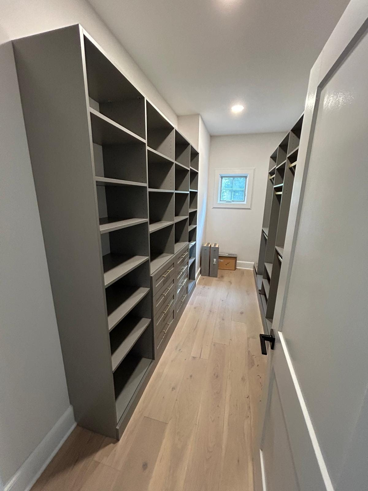
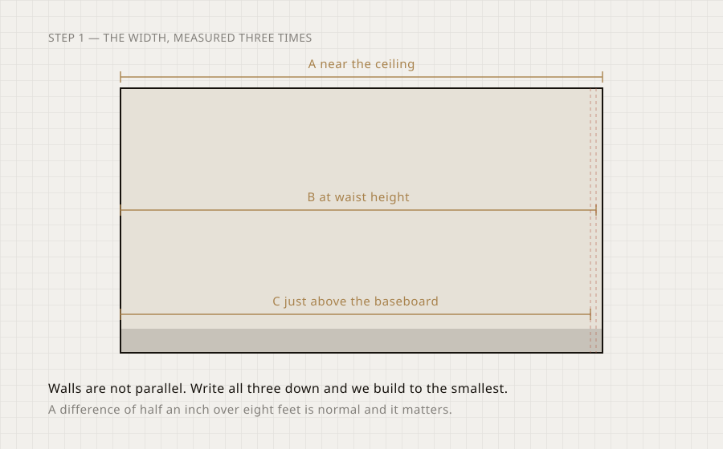
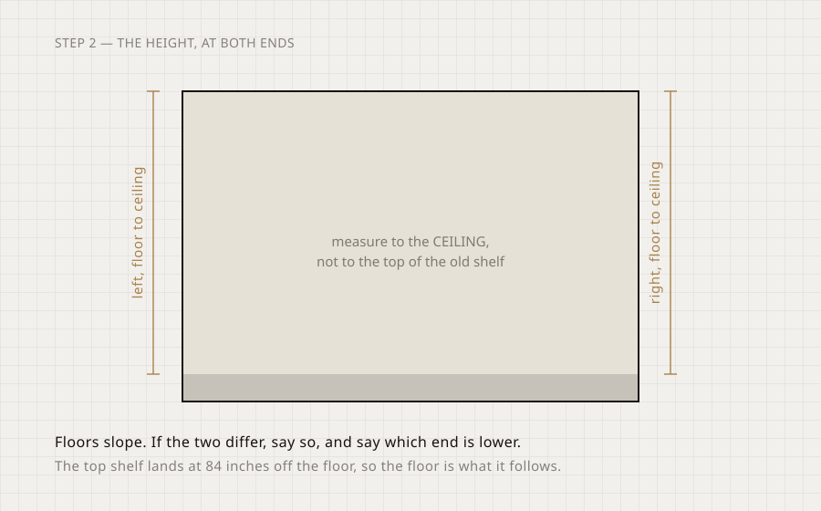
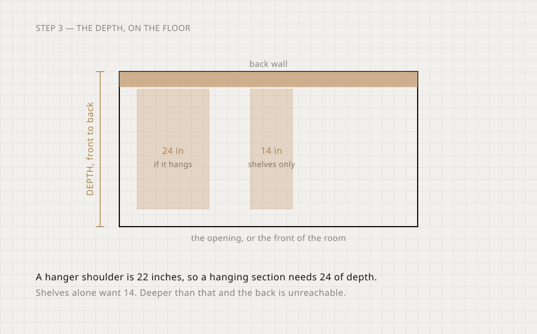
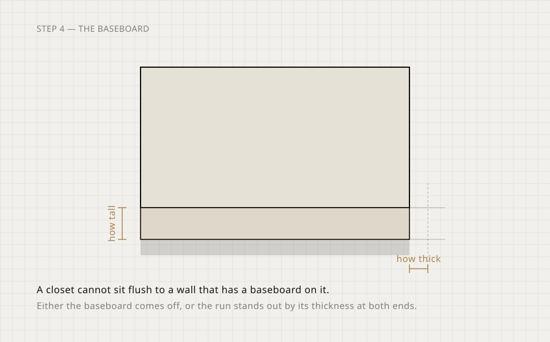
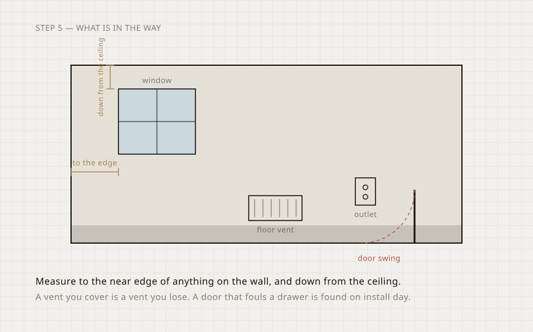
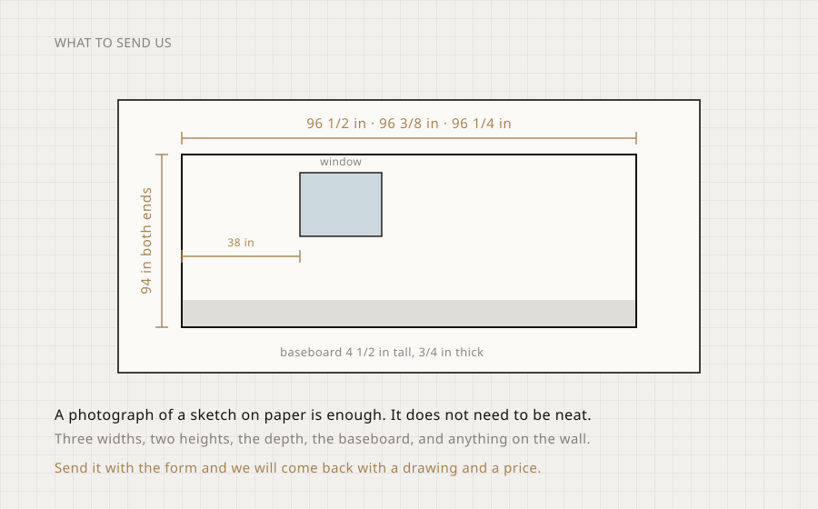

Measure your own closet
Six numbers and a photograph of a sketch. That is enough for us to draw your closet and price it, before anyone comes to the house.
What you need
- A steel tapeNot a cloth one. A cloth tape stretches and a closet built from a stretched tape does not fit.
- Paper and a penWrite each number down as you take it. Nobody remembers six numbers.
- Your phonePhotograph the wall as well as the sketch. The photo answers what the numbers cannot.
- Ten minutesThat is genuinely all it takes, and it is the difference between a real price and a guess.
The width, measured three times
A near the ceiling, B at waist height, C just above the baseboard.
Nobody’s walls are parallel. Over eight feet, half an inch of difference is ordinary, and a cabinet cut to the widest measurement will not go in.
Take the width at three heights and write all three down. We build to the smallest of them and the gap that leaves is closed with a filler strip, which is a part on your quote rather than a surprise on install day.
TipSteel tape, held level. If the tape sags across a long wall, push it against the back wall and read it there.

The height, at both ends
Floor to ceiling on the left, floor to ceiling on the right.
Floors slope, especially in an older house and especially in Florida where a slab moves. If the two ends differ, say which end is lower.
Measure to the ceiling, not to the top of whatever shelf is up there now. The builder’s shelf is usually at 72 inches and the top shelf of a real system lands at 84, so the old one is telling you nothing about the room.
TipIf there is crown moulding, measure to the bottom of it and tell us it is there.

The depth, on the floor
Front to back, from the back wall to the front of the opening.
A hanger’s shoulder is 22 inches across, so anything that hangs needs 24 inches of depth. Less than that and the clothes press against the doors.
Shelves on their own want 14 to 16. Deeper than that and the back of the shelf is somewhere you put things and never see them again. A reach-in is usually 24 deep; a walk-in is whatever the room is, and the cabinetry takes 24 of it on each wall it runs along.
TipMeasure on the floor, not at shoulder height, and measure to the inside face of the door frame.

The baseboard
How tall it is, and how far it sticks out.
A closet cannot sit flush to a wall that has a baseboard on it. There are two honest answers and they cost different amounts.
Either the baseboard comes off the wall inside the closet, which is the tidy answer and means the cabinetry sits flat on the wall. Or the whole run stands forward by the thickness of the baseboard at both ends, which costs you that much width and needs a scribe at each end.
The builder asks you which, and the width you have to play with changes with the answer.
TipTwo numbers: the height off the floor, and the thickness off the wall. A quarter inch matters here.

Everything else on the wall
Windows, vents, outlets, switches, radiators, and which way the door swings.
Anything on the wall becomes either a hole in the cabinetry or a thing you covered up. The ones people forget are the floor vent, which stops working the day it goes under a drawer bank, and the door swing, which is found on install day.
For each one, give us the distance from the left wall to its near edge, the distance down from the ceiling, and how big it is. That is enough for us to draw around it.
TipPhotograph the wall as well. A photo answers questions the measurements do not.

What to send us
A photograph of a sketch on paper is enough.
It does not need to be neat and it does not need to be to scale. A rectangle with numbers written on it is exactly what we work from.
Three widths, two heights, the depth, the baseboard height and thickness, and anything on the wall with its distance from the left and down from the ceiling. Send it with the form and you get back a drawing and a price.
TipIf you would rather not measure at all, the in-home measure is free and we do it properly.

Questions about measuring
If yours is not here, call and we will talk it through. Ask us directly.
Do I have to measure it myself?
No. The in-home measure is free and the person who does it is the person who draws your closet. Measuring yourself is for getting a price before you book anything.
What if my walls are not square?
They are not. That is why we ask for three widths. We build to the smallest and close the gap with a filler strip, which is itemised on the quote.
Inches or feet?
Inches, with fractions, and do not round. 96 1/2 is useful. "About eight feet" is not.
What about a sloped or vaulted ceiling?
Measure the height at both ends and tell us where the slope starts. We build the run to the lowest point and step the top shelf if it is worth doing.
Do I measure the opening or the room?
Both, if they are different. For a reach-in, the inside of the closet is what we build in and the door opening is what the cabinetry has to pass through.
Can I just send photos?
Photos plus the numbers. A photo cannot be measured, but it answers everything else, so send both.
Send it over, and we will draw it.
A drawing and a price come back the same working day. Or book the free in-home measure and we will take the numbers ourselves, anywhere from Orlando and Tampa down to Key West, and across New York, New Jersey, Connecticut and Pennsylvania.